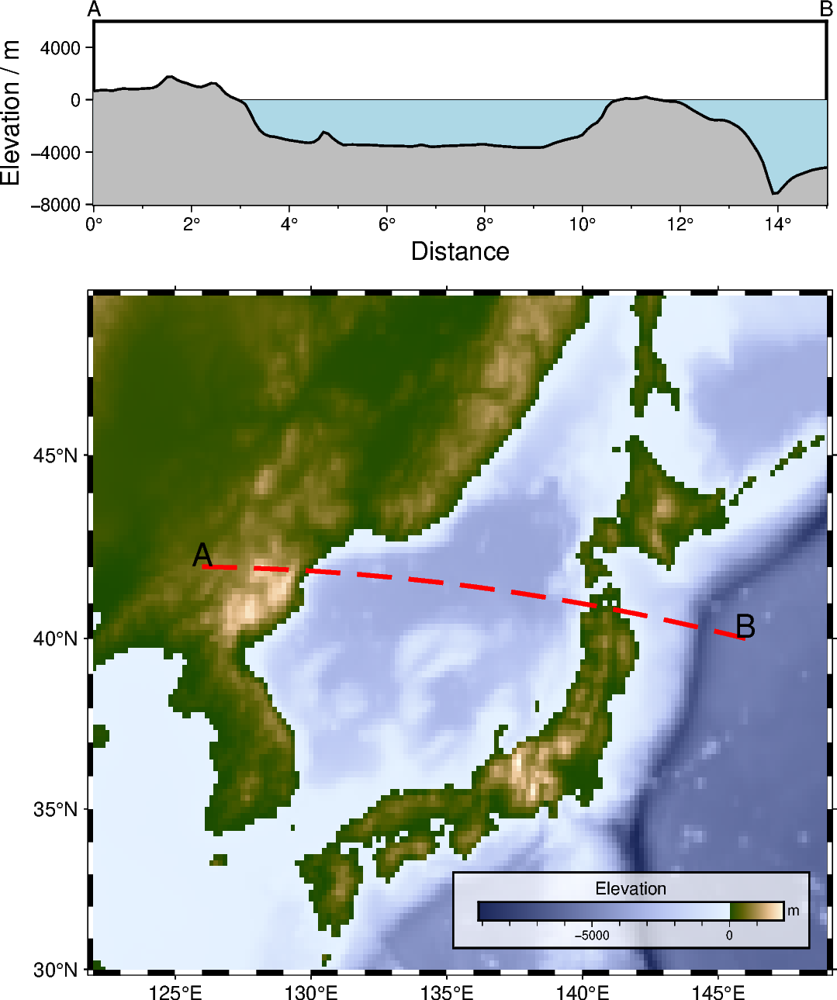

Note
Go to the end to download the full example code.
Cross-section along a transect
pygmt.project and pygmt.grdtrack can be used to focus on a quantity and
its variation along a desired survey line. In this example, the elevation is extracted
from a grid provided via pygmt.datasets.load_earth_relief. The figure consists
of two parts, a map of the elevation in the study area showing the survey line and a
Cartesian plot showing the elevation along the survey line.
This example is orientated on an example in the GMT/China documentation: https://docs.gmt-china.org/latest/examples/ex026/
import pygmt
from pygmt.params import Box, Position
# Define region of study area
# lon_min, lon_max, lat_min, lat_max in degrees East and North
region_map = [122, 149, 30, 49]
# Chose a survey line with start point A and end point B
lonA, latA, lonB, latB = 126, 42, 146, 40 # noqa: N816
# Create a new pygmt.Figure instance
fig = pygmt.Figure()
# ----------------------------------------------------------------------------
# Bottom: Map of elevation in study area
# Set up basic map using a Mercator projection with a width of 12 centimeters
fig.basemap(region=region_map, projection="M12c", frame="af")
# Download grid for Earth relief with a resolution of 10 arc-minutes and gridline
# registration [Default]
grid_map = pygmt.datasets.load_earth_relief(resolution="10m", region=region_map)
# Plot the downloaded grid with color-coding based on the elevation
fig.grdimage(grid=grid_map, cmap="SCM/oleron")
# Add a colorbar for the elevation
fig.colorbar(
# Place the colorbar inside the plot in the Bottom Right (BR) corner with an offset
# of 0.7 centimeters and 0.3 centimeters in x- or y-directions, respectively;
# move the x-label above the horizontal colorbar.
position=Position("BR", offset=(0.7, 0.8)),
length=5,
width=0.3,
orientation="horizontal",
move_text="label",
# Add a box around the colobar, filled in white and a 30 % transparency, with a
# 0.8-point thick, black, outline.
box=Box(pen="0.8p,black", fill="white@30"),
# Add x- and y-labels ("+l")
frame=["x+lElevation", "y+lm"],
)
# Plot the survey line
fig.plot(x=[lonA, lonB], y=[latA, latB], pen="1p,red,solid")
# Add labels "A" and "B" for the start and end points of the survey line
fig.text(
x=[lonA, lonB],
y=[latA, latB],
text=["A", "B"],
offset="0c/0.3c", # Move text 0.2 centimeters up (y-direction)
font="15p,red", # Use a red font with a size of 15 points
)
# ----------------------------------------------------------------------------
# Top: Elevation along survey line
# Shift plot origin to the top by the height of the map ("+h") plus 1.5 centimeters
fig.shift_origin(yshift="h+1.5c")
fig.basemap(
region=[0, 15, -8000, 6000], # xmin, xmax, ymin, ymax
# Cartesian projection with a width of 12 centimeters and a height of 3 centimeters
projection="X12c/3c",
frame=0,
)
# Add labels "A" and "B" for the start and end points of the survey line
fig.text(
x=[0, 15],
y=[7000, 7000],
text=["A", "B"],
no_clip=True, # Do not clip text that fall outside the plot bounds
font="10p,red",
)
# Generate points along a great circle corresponding to the survey line and store them
# in a pandas.DataFrame
track_df = pygmt.project(
center=[lonA, latA], # Start point of survey line (longitude, latitude)
endpoint=[lonB, latB], # End point of survey line (longitude, latitude)
generate=0.1, # Output data in steps of 0.1 degrees
)
# Extract the elevation at the generated points from the downloaded grid and add it as
# new column "elevation" to the pandas.DataFrame
track_df = pygmt.grdtrack(grid=grid_map, points=track_df, newcolname="elevation")
# Plot water masses
fig.plot(
x=[0, 15],
y=[0, 0],
fill="lightblue", # Fill the polygon in "lightblue"
pen="0.25p,black,solid", # Draw a 0.25-point thick, black, solid outline
close="+y-8000", # Force closed polygon
)
# Plot elevation along the survey line
fig.plot(
x=track_df.p,
y=track_df.elevation,
fill="gray",
pen="1p,red,solid",
close="+y-8000",
)
# Add map frame
# Add annotations ("a") and ticks ("f") as well as labels ("+l") at the west or left
# and south or bottom sides ("WSrt")
fig.basemap(frame=["WSrt", "xa2f1+lDistance+u°", "ya4000+lElevation / m"])
fig.show()
Total running time of the script: (0 minutes 0.311 seconds)